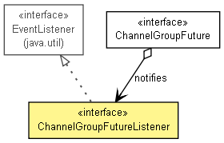

org.jboss.netty.channel.group
接口 ChannelGroupFutureListener
- 所有超级接口：
- java.util.EventListener
public interface ChannelGroupFutureListener
- extends java.util.EventListener

监听一个ChannelGroupFuture的结果.一旦这个监听器被调用
ChannelGroupFuture.addListener(ChannelGroupFutureListener)
方法添加,并且所有的I/O操作都完成时,监听器会收到ChannelGroup的异步I/O操作结果.
operationComplete
void operationComplete(ChannelGroupFuture future)
throws java.lang.Exception
- 当关联
ChannelGroupFuture的所有I/O操作完成时调用.
- 参数：
future - 调用该回馈的源ChannelGroupFuture.
- 抛出：
java.lang.Exception